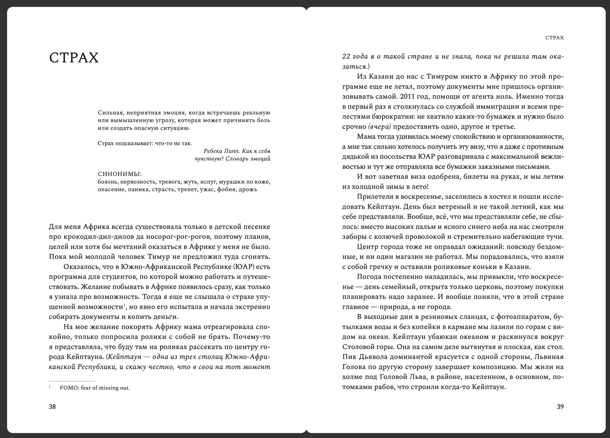

СтрахОпределение эмоции и история из Южной Африки. В финале — вопросы о собственных защитных реакциях: замирать, нападать или избегать.
Для женщины, которая привыкла справляться и однажды поняла, что почти перестала слышать себя.
37 личных историй из пяти континентов. В каждой есть эмоция, прожитый эпизод, вопросы к себе и практика, к которой можно вернуться в обычной жизни.
224 страницытвёрдый переплёт16+ISBN 978-5-88687-295-8«Деловая книга»

А сказать получается только: «я устала», «я злюсь» или «со мной что-то не так».
Книга помогает задержаться рядом со своим состоянием чуть дольше. Не исправлять его немедленно. Сначала услышать, назвать и увидеть, что оно пытается тебе сказать.
Можно читать подряд. Можно открыть одну главу в метро. Можно через два года снова ответить на вопросы и заметить, как изменились твои слова.
Каждая глава соединяет живую историю и возможность повернуться к собственной. Порядок не обязателен: можно начать с той эмоции, для которой сегодня особенно нужны слова.
Пять континентов, переезды, утраты, любовь, материнство, работа и моменты, о которых обычно не рассказывают гладко.
В конце главы внимание возвращается к тебе: что отозвалось, где это живёт в твоей истории, что хочется заметить.
В книге есть 5–4–3–2–1, дыхательные техники и другие способы вернуть внимание к тому, что происходит сейчас.
Она помогает увидеть свой мир как пространство: с комнатами, закрытыми дверями, привычными дорогами и местами опоры.
«Я и есть свой уютный дом».из книги «Архитектор эмоций»
У книги есть настоящая география. Истории происходили в поездках, городах, пустынях, у воды и под водой. Фотографии возвращают им температуру, свет и людей.
 Индия
Индия дорога вдоль воды
дорога вдоль воды Австралия
Австралия под водой
под водойФотографии из личного архива Маши Хёрд.
Сначала эмоция получает имя. Затем начинается реальная история. В конце появляется пауза, вопрос или практика, которая возвращает внимание к твоему опыту.
Скачай главу «Страх». Так можно спокойно посмотреть, подходит ли тебе мой голос, ритм книги и сам способ чтения: история, размышление и вопросы к себе.
Это личные впечатления конкретных читательниц, а не обещание одинакового результата для всех.
«Маша не обещает волшебной таблетки. Она делает кое-что важнее: идет рядом и показывает, что чувствовать можно. Чувствовать — значит, жить».Лариса Парфентьеваавтор бестселлера «100 способов изменить жизнь», специалист по системному семейному консультированию, спикер TEDx · из предисловия

«Это не стандартный нон-фикшн про психологию, это книга про смелость чувствовать. Про то, что эмоции — не враги, а ориентиры. Про то, что дом можно найти в любой стране, если однажды обрести его внутри себя».Даша Аглиуллинаавтор подкаста «Что они скажут» о смелости проявляться и перестать зависеть от чужого мнения
«Путешествовать по своим эмоциям — невероятно интересно, но требует ещё большей смелости. В историях книги переплетаются разные города, страны и эмоции, и каждый читатель заберёт из этого путешествия свой сувенир».Анастасия Ивановаавтор книг Use your Girl Power! и Telegram-канала «Главная Героиня»
«Я открыла почитать несколько страниц и очнулась на трети книги. Это редкое умение — приглашать, а не поучать».Елена Резановаавтор книг «Никогда-нибудь» и «Это норм»
Для этого я собрала бережное сопровождение. Здесь не нужно успевать за марафоном. Ты слушаешь, читаешь, пишешь и постепенно замечаешь, что повторяется в твоём внутреннем мире.
Печатная книга остаётся рядом для заметок. Аудиокнига моим голосом подходит для дороги или дня, когда читать глазами нет сил. Фотографии возвращают историям их географию.
В рабочей тетради каждой главе отведено отдельное место. Можно увидеть повторяющиеся состояния, источники усталости и уже существующие опоры.
Аудиопрактика на 10–15 минут помогает сделать паузу без экрана и заметить тело, мысли и текущее состояние.
Три видеолекции дают конкретные способы наблюдать эмоции и внимание в мире информационного шума и перегрузки.
Материалы собраны в закрытом Telegram-пространстве читательниц. К главам и упражнениям можно возвращаться тогда, когда есть ресурс.
При оплате до 6 декабря 2026 года включительно мы встретимся на воркшопе 13 декабря: назовём повторяющиеся состояния, увидим источники истощения и поддержки и выберем одну опору на январь.
«Эмоциональный ландшафт года» — воркшоп по подведению итогов через чувства. Мы посмотрим, как тебе жилось в этом году, что повторялось, что забирало силы и на что хочется опереться в январе. Запись останется в Telegram-ветке без ограничения по времени.
Начать можно сразу, не дожидаясь печатной книги. Выбирай ту форму, на которую сегодня есть силы: слушать, читать, писать или сделать короткую паузу.
В закреплённом сообщении лежат материалы и понятная навигация.
Не обязательно начинать сначала. Можно открыть то состояние, которое отзывается сейчас.
Аудиокнига, фотографии и рабочая тетрадь помогают не потерять собственные мысли.
10–15 минут без экрана, чтобы вернуть внимание к себе.
Команда уточняет адрес и отправляет книгу. Доставка по России включена.
На Zoom-воркшопе собираем эмоциональный ландшафт года и выбираем опору на январь.

Можно читать самостоятельно. А можно превратить книгу в личное исследование с моим сопровождением. Книга одна и та же, опыт рядом с ней разный.
Книга, материалы для погружения, Telegram-пространство и живая встреча с Машей.
37 историй, вопросы и практики для самостоятельного чтения в своём темпе.
Цены и наличие меняются. Перед оплатой проверь итоговую стоимость и доставку на странице продавца.
Предзаказ у издательства. Доставку согласуют отдельно, затем пришлют ссылку на оплату.
Купить у издательства ↗Цена, наличие и способ получения зависят от города и момента заказа.
Открыть «Читай-город» ↗Предзаказ; на момент проверки указана скидка с базовой цены 1 439 ₽.
Открыть «Буквоед» ↗Предзаказ; на момент проверки указана скидка с базовой цены 1 439 ₽.
Открыть Book24 ↗Нет. Можно открыть эмоцию, которая отзывается сейчас, прочитать одну главу и остановиться.
Упражнение можно пропустить, книгу закрыть и вернуться позже. Книга и сопровождение не заменяют психологическую или медицинскую помощь.
Печатное издание одно и то же. В сопровождение входят аудиокнига, фотографии, рабочая тетрадь, практика, лекции, Telegram-пространство и доставка книги по России. При оплате до 6 декабря 2026 года включительно также входят живой воркшоп и его запись без ограничения по времени.
Запись останется в Telegram-ветке без ограничения по времени.
Цифровые материалы доступны после подтверждения оплаты. Срок отправки печатной книги команда уточнит при оформлении.
Международная доставка печатной книги не входит в 5 500 ₽ и рассчитывается отдельно. Перед оплатой напиши команде Маши.
Команде Маши в Telegram: @mari_zaychik.
Если тебе хочется не только прочитать истории, но и услышать собственную, я буду рядом. Если сейчас нужен только текст, выбери удобный магазин.